“Connecting children in need with surplus toys is critical for social assistance and reducing waste.”
[ Project 03 / 09 ]UI/UXPortfolio 2026
Toy Sharing Platform
- Type
- User Experience Design Lecture (3rd Year)
- Time
- 3 Months
- Team
- 4 People
- Role
- UI/UX Design
Toyago is a toy sharing platform that influences the sharing, swapping behaviours amongst parents and children which contributes to the circular economy by reusing and repairing the old unused toys.

01Problem
Children have more than enough toys nowadays, some of which they stop playing with over time.
How can we include these toys in the circular economy?
02What I did
UI/UX design, as part of a team of four.
03Outcome
Motivational features like badges and profile reviews enhance trust and engagement, creating a dynamic toy-sharing ecosystem.
03.1Motivation
How can we include these toys in the circular economy?
Children have more than enough toys nowadays, some of which they stop playing with over time.
[ Concerns ] 01Social
02Environmental
Reducing toy waste through sustainability leads to a more eco-friendly world.
03Economic
Affordable second-hand toy market fosters child development by helping families meet needs and reduce toy waste.
03.2 — Project Path
Project Path
[ Research ]1. Semi-Structured Interviews2. Cultural Probes3. User Research Analysis4. Empathy maps
[ Idea Generation ]5. Developing Ideas6. User Feedback7. Affinity Map
[ Finalization ]8. Storyboards9. System Description10. System Map
[ Final Product ]11. UI Designs12. Prototype
03.3Research
Research
[ Qualitative Research ] · 05 chapters
Semi-structured interviews with parents · Cultural Probes with kids
By mapping out what users say, think, feel, and do, we gained valuable insights that guided our design process and helped us create more user-centric solutions.
[ Brief ]How might we enable, motivate and coordinate toy sharing behaviour among families?
R.05
From insight to opportunity
Key findings paired with the scenarios and system features they led to.Research insight
Design response
01 / User Research Analysis
Kids enjoy sharing and swapping toys.
+ Parents are into the idea of swapping toys.→ Service Map
Users can schedule pickups, list items for sale, join forums, and organize swaps.
02 / User Research Analysis · Empathy map
Issues finding a family or an organization to donate.
+ they can’t find other families to share→ Donation
Go to donate section via app and notify municipality... Municipality comes and takes toys from houses.
03 / User Research Analysis · Empathy map
Parents want to be sure that the toys will go to those in need.
+ will the donated toys really go to someone in need→ Service Map
Key stakeholders, including families, municipalities, and charities, collaborate within the platform.
04 / User Research Analysis · Empathy map
Parents try to fix the toys before throwing them out.
+ toys should be fixed if they don’t work→ Fixing Forums
Parents decide to fix it and ask users from Toyago App.
05 / User Research Analysis
Toys can be temporary desires.
+ If the child does not want the toy after buying it it can be sold immediately.→ Buying/Selling
Mom sells the toy that her daughter doesn’t want on Toyago.
R.01
Research questions
What the interviews and probes set out to learn.01
Under what circumstances are parents willing to share/give away their children's toys?
02
How do they approach buying their children toys that others no longer play with?
03
What is the attitude of parents about exchanging, donating and selling toys?
04
How do children approach sharing their toys with other children?
05
Which toys are they prone to share or not?
06
How do they approach buying someone else's toy?
07
How often do children's toy tastes change?
Research protocol as planned in the project.
01
Parents
Semi-structured interviews with parents4-6 families resembling different characteristics (number of kids, ages, genders etc.) · Interview guide for parents
02
Kids
Cultural Probes with kidsPhotographs will be collected from the kids.
LocationTurkey
Duration25-30 mins for each interview
PlatformOnline (Zoom, Whatsapp, Skype)
SamplingNot clear, Snowball Method will be used for reaching participants
Grouped interview findings. Outlined notes were circled as key findings in the original analysis.
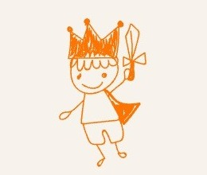
Children's Behavior & PreferencesReluctance to Give Away Toys:Gifted toys can be unwanted.Mostly kids don’t want to give out their toys.
Enjoyment in Sharing and Swapping:Kids enjoy sharing and swapping toys.Children enjoy sharing their play experience/toys.
Toy Preferences:Kids want to decide on the toy.
Playing Habits:Small kids can break and paint toys.Children play more gently with toys after a certain age.
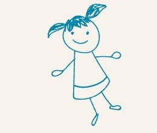
Parents' Behavior & PreferencesDonation and Sharing:Parents give out their toys to those in need.Parents are into the idea of swapping toys.Some families exchange toys with other families.
Concerns About Donations:Parents want to be sure that the toys will go to those in need.Issues finding a family or an organization to donate.
Buying and Selling:Parents don’t want to buy expensive toys.Some parents can buy second hand toys but not sell them.Parents also prefer the toys they can play with too.Expensive toys can be sold.If the child does not want the toy after buying it, it can be sold immediately.
Sustainability and Fixing:Parents try to fix the toys before throwing them out.The toys from the older family members are fixed and used.Parents have sustainability concerns.
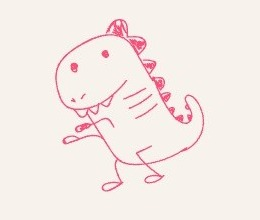
General Trends & IssuesToy Management:Regular cleanouts for toys.Parents throw away the unused toys immediately. Especially small ones.Donation rather than sellingStorage problem with toys.
Purchasing Patterns:Parents with multiple kids buy the same toy for each child.Toys are generally bought a few times a month.
Health and Safety:Health and security factor is important for second hand toys.
Toy Durability:Some toys are worn out but not unplayable.Toys can be temporary desires.
Following our user research analysis, we developed detailed empathy maps to better understand the needs and behaviors of our target users: families and children.
These empathy maps were created based on feedback gathered from qualitative research with parents and children.
User
User: Families
Says“My children have sentimental connection to toys that are gifts”“We prefer educational/ developmental toys”Donating instead of selling“The kids interest stays for a short time”“Other family members usually buy toys but we are not happy with their choices”“I would like to keep valuable and expensive toys”
Thinkstoys should be donated to the ones that are in neededucational/ developmental toys are preferredthere are too many excess toys at homewill the donated toys really go to someone in needtoys should not be soldpeople with financial problems should have the toysafter a certain time the toys are still usablethe donation should be controlled by an organizationtoys should be fixed if they don’t work
Doesthey can’t find other families to sharefamilies throw away toys secretlygives toys to someone in need via a contactexchange toys between close friendsthey buy toys every 1-2 monthsbuys toys on important days/holidays
Feelsdonating is a very emotional and valuable actionit is not ethical to buy a second hand toy for someone elsefeeling sentimental towards toysit is not ethical to sell their children’s toys and make moneythey would be worried about the hygienechildren should be informed while sharing their toys
User
User: Children
Says“I like colorful toys”“I would give my toys that I play when I was a baby.”“I don’t want to give away toys because there are memories”
Thinkschildren internalize toysthey want new toystoys are temporary desiresthinks it’s childish/ babyish.children think they are able to share their old toys
Doessleeps with their toys and takes it everywherelove to choose their own toys to buytends to forget the toys if its not seen for a while
Feelschildren have a sentimental connection towards toyshelping children with no toys is nice
03.4System
Service Map
Users can schedule pickups, list items for sale, join forums, and organize swaps.
Key stakeholders, including families, municipalities, and charities, collaborate within the platform.
Motivational features like badges and profile reviews enhance trust and engagement, creating a dynamic toy-sharing ecosystem.
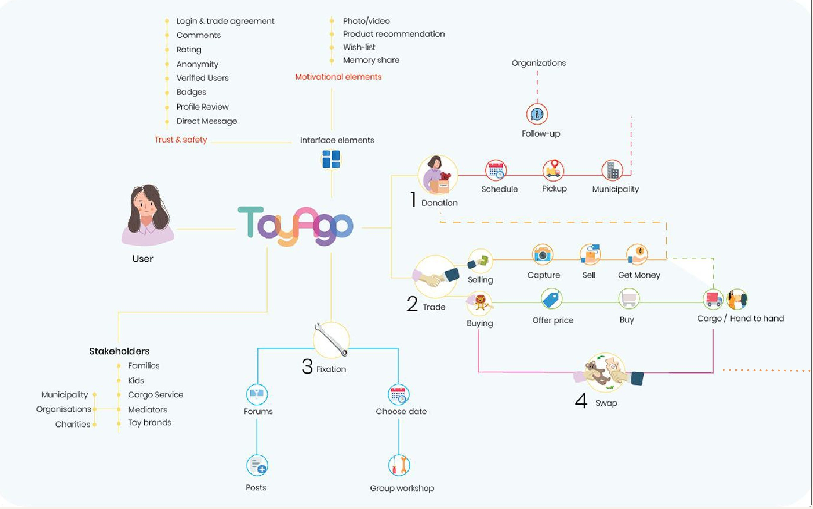
03.5 — Storyboards
How might we enable, motivate and coordinate toy sharing behaviour among families?
[ Storyboard ]
Buying/Selling
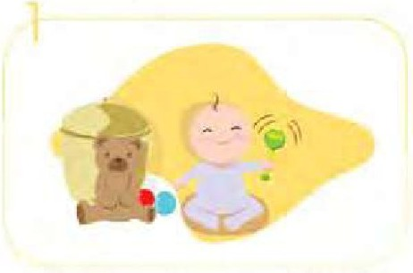
01Once upon a time a baby was happy with her toy...
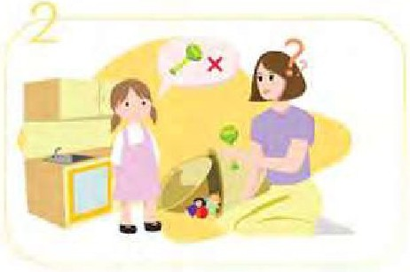
025 years later... She doesn’t want the toy anymore
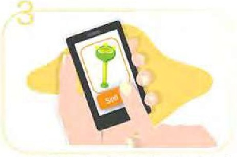
03Mom sells the toy that her daughter doesn’t want on Toyago.
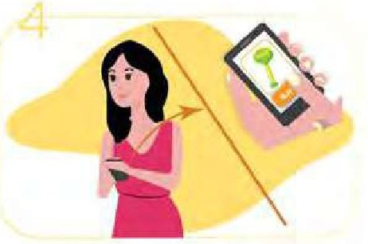
04Another parent sees the toy for sale and decides to buy it.
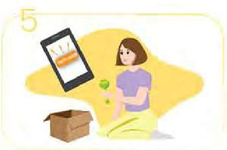
05Mom gets the notification and packages the toy.
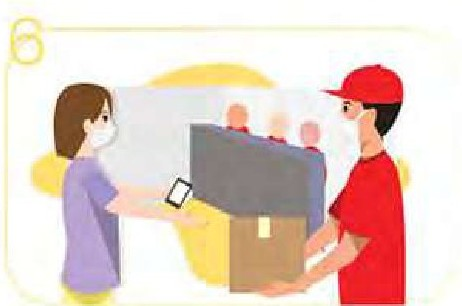
06Mom goes to the closest shipment company and sends her package...
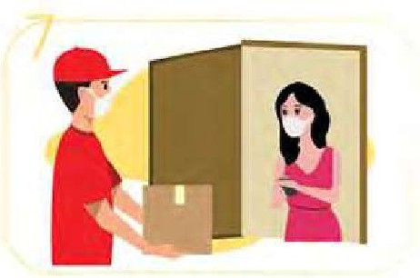
07Package arrives at the buyer’s house.
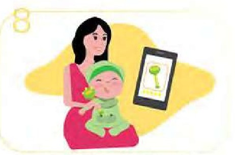
08The toy now has a new family and made another baby happy.
[ Storyboard ]
Donation
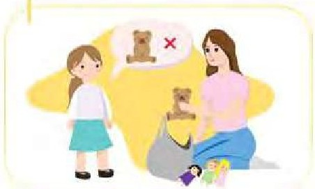
0110 years later... Her mom is collecting toys for donation...
02
Go to donate section via app and notify municipality...
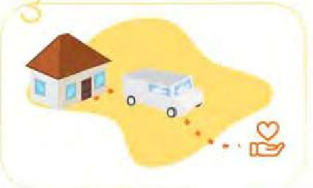
03Municipality comes and takes toys from houses.
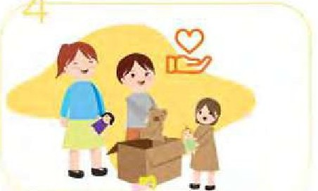
04Donated toys reach children in need.
[ Storyboard ]
Fixing Forums
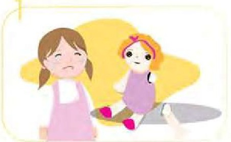
01A kid’s favourite toy gets broken while playing.
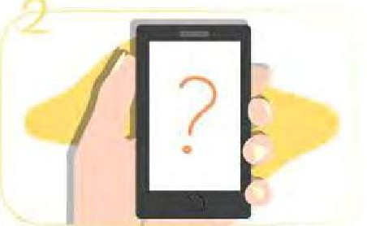
02Parents decide to fix it and ask users from Toyago App.
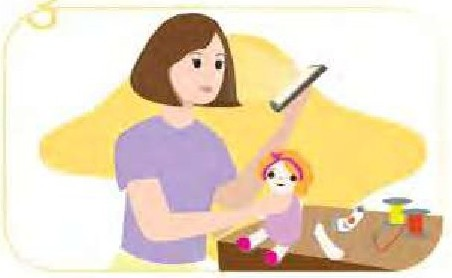
03Someone replies and parent tries to fix it.
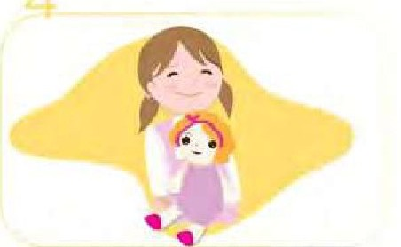
04Now, the kid’s favorite toy is repaired and ready to play!
03.6Final Product
UI Designs
[ Flows ]01 Onboarding02 Sign Up03 Donation04 Search05 Home06 Profile
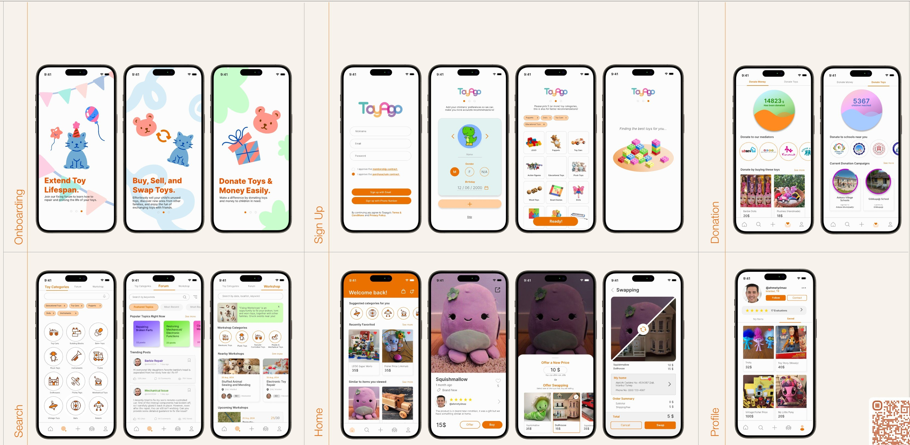
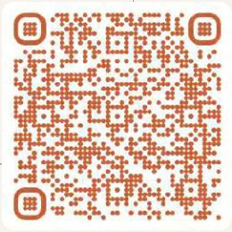
Scan for detailed info about Toyago